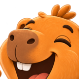

Uma viagem pelas águas do Brasil
O Brasil corre
por aqui.
Descubra os rios e suas características, um passo de cada vez.
Começa fácil 5 acertos Sem tempo limite

0 de 50 pontosGEOGRAFIA DO BRASIL
Hidrografias
Descubra os rios brasileiros e suas características.
Qual característica corresponde a este rio?
Desafio concluído
Você navegou
pelo Brasil!
50pontos
5acertos
00:00tempo
Resultado desta partida não pôde ser salvo no ranking.